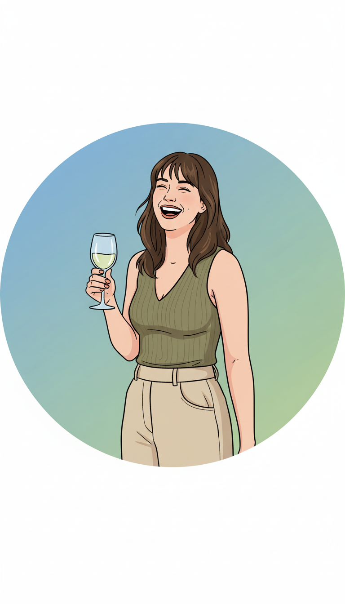

Ana Arco Izquierdo
Musicología & Humanidades Digitales
"Quien no conoce su historia está condenado a repetirla."
La vida de la razón, 1905.
George Santayana, filósofo y escritor español.

Haciendo dialogar la tecnología con la historia.
El código como medio para mantener vivo nuestro patrimonio.
Explora mi camino